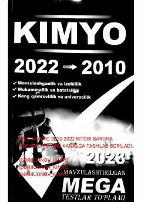

KFKimyo fanidan 2010-2022-yillar uchun mavzulashtirilgan testlar to'plami.
Ushbu o'quv qo'llanmada 2010-2022-yillardagi Davlat test markazi (DTM) talablari asosida tuzilgan kimyo fanidan mavzulashtirilgan test topshiriqlari jamlangan. Kitob maktab o'quvchilari, akademik litsey o'quvchilari, abituriyentlar hamda kimyo fani o'qituvchilari uchun bilimlarini mustahkamlash va sinovlarga tayyorgarlik ko'rishga mo'ljallangan.